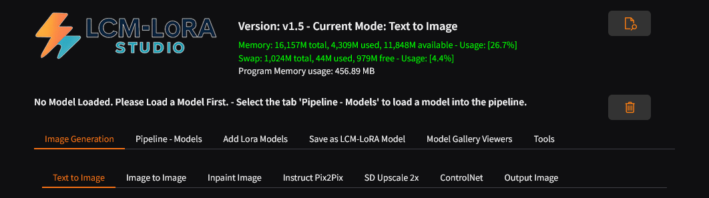
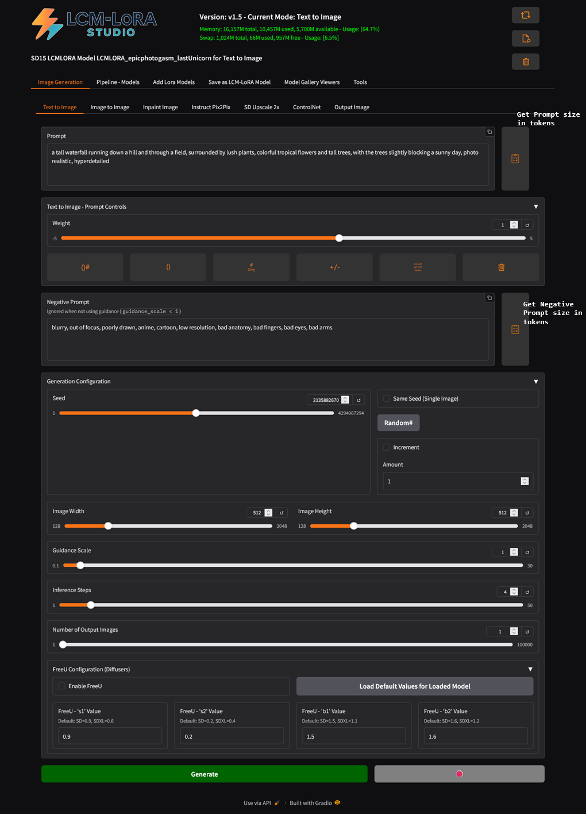
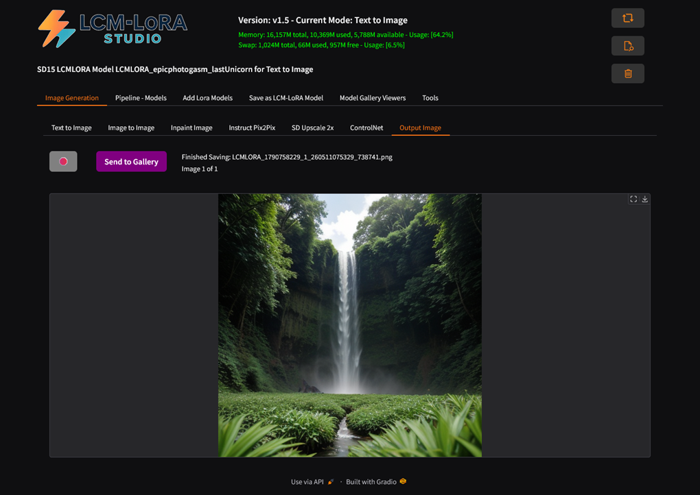
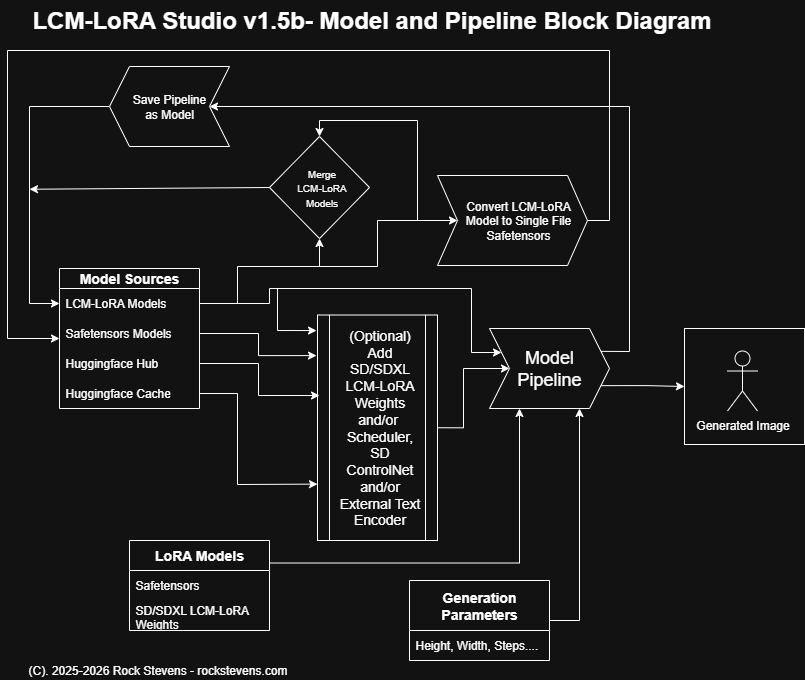

UPDATE: 05-09-2026 Runs on Raspberry Pi 5 OS with 8 GB RAM !!. See below for details. (MUST USE the 'lite' version for 8GB PI5)
UPDATE: 05-15-2026 Added: Save LCM-LoRA Models as Single File Safetensors Models (SD/SDXL), Load separate Text Encoder for Safetensors Models (SD Only)
Create a high-quality image, in an average of ONLY 4 STEPS, using just a low-end CPU or a Raspberry Pi 5.
At it's basic core it generates images using common
StableDiffusion techniques. However add an LCM-LoRA to the base model and this enables a 4 Step inference
to generate images. This shorter number of steps allows us to generate images faster than the nomal 20-50
step de-noising process. LCM-LoRA Studio was mainly written for PC's with no good GPU, and the Raspberry Pi 5 as a first step, in order to reduce inference time while
still generating high-quality images.
And to create special LoRA 'baked-in' types of models, in an, 'all-in-one' application.
Advantages:
Design:
This app is designed to address these issues that exist.


In essence, Load a SD/SDXL model into the LCM-LoRA Studio 'Pipeline', add the LCM-LoRA Weight to the 'Pipeline',
then you can generate an image in ONLY 4 STEPS. Then, if you like the results,
Save the 'Pipeline' as a New LCM-LoRA Model. Or add additional LoRA models for various fine-tuning tasks,
and Save that model as well.
See the block diagram below.

Image Generation (SD/SDXL)
Prompts
General Image Generation
Models - Pipeline
LoRA
General Features
Programmers-Hacking Features
Model: Original Stable Diffusion Base (SD) v1.5
LoRA: SD15 LCM-LoRA added to model with weight of 1.0
Image Size: 512 x 512
CFG: 1.0
Prompts: Normal, no embedded prompts.
NOTE: On an 8GB Raspberry Pi 5 you can only do SD. SDXL models are too big for just 8GB of RAM.
| Operating System | CPU | RAM | Storage Type | Time per iter | Total time | SD Model / Prec |
|---|---|---|---|---|---|---|
| Windows 10 Pro | Intel(R) Core(TM) i5-12500T @ 2.00GHz | 16G | USB 3.0 FLASH | 6.34 s/it | 48 s | LCM-LoRA / FP16 |
| Windows 11 Pro | Intel(R) N95 @ (1.70 GHz) | 16G | USB 3.0 SSD | 8.04 s/it | 53 s | LCM-LoRA / FP16 |
| Raspberry Pi OS | Raspberry Pi 5 | 8G | Class10 SDCARD | 13.75s/it | 90 s | LCM-LoRA / FP16 (SD Only) |
| Raspberry Pi OS | Raspberry Pi 5 | 16G | PCIe 2.0 NVMe SSD | 13.19s/it | 71 s | LCM-LoRA / FP16 |
Inference time and RAM usage always goes up if there is an increase in, Image Size or CFG Scale, and SDXL models always take longer than SD models.
'Time per iter' comes from the 'diffusers' progress bar.
'Total time' comes from LCM-LoRA Studio. Starts when inference begins, Stops once the image is saved. So that includes 'decoding' the image.
To install, ensure you are connected to the internet for installation of Python packages not in your pip cache, etc... Then later of course to download models, after that, it can work 100% Offline.
LCM-LoRA Studio can be installed right from Explorer.
Just navigate to the LCM-LoRA Studio folder and double-click:
install.bat
Use the Raspberry Pi Imager tool to make an image onto an SD Card of Trixie-Lite Release 4-21-2026.
We use Trixie-Lite Release 4-21-2026, because it uses least amount of RAM.
Set up as you normally would, but we are going to be setting it up for 'headless' operation. So make sure to Enable SSH.
When done. Put SD Card in Pi5. Boot the Pi5.
Open a terminal (SSH/Putty) and Login.
The 'lite' version of Raspberry Pi OS needs the transitional dummy package: 'libgl1-mesa-dev' used by Python-OpenCV2, since you will be using the Pi 'headless'.
In the terminal type the following 2 command lines:
sudo apt-get update
sudo apt-get install libgl1-mesa-dev
Now, you will need to finish configuring your Raspberry Pi 5 via 'raspi-config'.
In the terminal type the following:
sudo raspi-config
Now configure your Pi5 to:
Exit raspi-config.
Reboot.
Open a terminal (SSH/Putty) and Log back in.
Now that we have installed the all of the requirements needed, we can install LCM-LoRA Studio.
If you prefer using 'git', you'll have to install it. It does not come with Trixie Lite, but we do not need it, so let's continue.
In the terminal type the following commands:
cd
wget -O lcm-lora-studio.zip https://github.com/rock-stevens/lcm-lora-studio/archive/refs/heads/main.zip
unzip lcm-lora-studio.zip
mv lcm-lora-studio-main lcm-lora-studio
Navigate to the directory you unzipped 'LCM-LoRA Studio' to.
cd lcm-lora-studio
In the terminal type the following commands to start installing LCM-LoRA Studio:
chmod +x *.sh
./install.sh
On both Windows and the Raspberry Pi 5, LCM-LoRA Studio installer will install the needed Python packages in order to run the app.
After installation of all of the packages, LCM-LoRA Studio will be ready to run.
To Run LCM-LoRA Studio, it is the same as the installation, from Explorer.
Just navigate to the LCM-LoRA Studio folder, but double-click:
run.bat
To Run LCM-LoRA Studio, In the terminal type the following command line:
./run.sh
To Run LCM-LoRA Studio, in a LOOP, on Windows, you can start it from Explorer.
Just navigate to the LCM-LoRA Studio folder and double-click:
restart.bat
To Run LCM-LoRA Studio, in a LOOP, on a Raspberry Pi 5
In the terminal type the following command line:
./restart.sh
About the Run LOOP method of starting LCM-LoRA Studio.
You can:
Note: With or without running LCM-LoRA Studio, via 'run' or 'restart' there is an Exit button in the App, try it.
Models used:
ControlNet:
ControlNet : https://huggingface.co/lllyasviel
Github: https://github.com/lllyasviel/ControlNet
Read the ControlNet Blog for more: https://huggingface.co/blog/controlnet
ControlNet Models used:
MLSD Line Detection: lllyasviel/sd-controlnet-mlsd : https://huggingface.co/lllyasviel/sd-controlnet-mlsd
HED Edge Detection: lllyasviel/sd-controlnet-hed : https://huggingface.co/lllyasviel/sd-controlnet-hed
Depth Estimation: lllyasviel/sd-controlnet-depth : https://huggingface.co/lllyasviel/sd-controlnet-depth
Scribble: lllyasviel/sd-controlnet-scribble : https://huggingface.co/lllyasviel/sd-controlnet-scribble
Canny: lllyasviel/sd-controlnet-canny : https://huggingface.co/lllyasviel/sd-controlnet-canny
Normal Map Estimation: lllyasviel/sd-controlnet-normal : https://huggingface.co/lllyasviel/sd-controlnet-normal
Image Segmentation: lllyasviel/sd-controlnet-seg : https://huggingface.co/lllyasviel/sd-controlnet-seg
OpenPose: lllyasviel/sd-controlnet-openpose : https://huggingface.co/lllyasviel/sd-controlnet-openpose
PyTorch - Linux Memory Fix :
Brian, of Gridline Productions, for the 'PyTorch Memory Fix' : https://github.com/brjen/pytorch-memory-fix
Other Thanks:
My Wife, who left me alone... with quiet... long enough to finish.
Do NOT use this project in any way to produce illegal, harmful or offensive content.
The author is NOT responsible for ANY content generated using this project, not limited to just models and images.
Licensed under the Apache License, Version 2.0